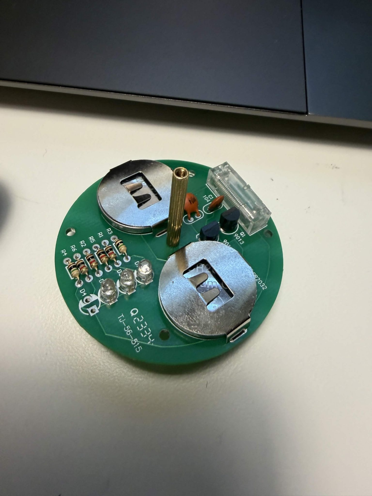

ELECTRONICS BUILD01 / FEATURED BUILD
Light-Up Beyblade
A hands-on electronics project built to light up when the Beyblade spins. The circuit board brings together LEDs and electronic components to create a glowing visual effect in motion.
Electronics · LEDs · MotionExplore this build ↗